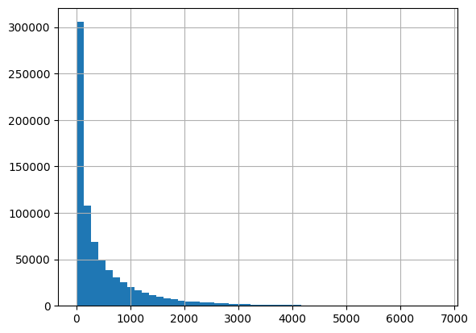
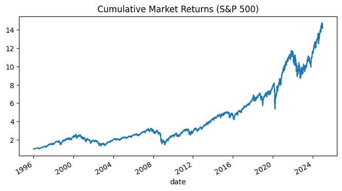
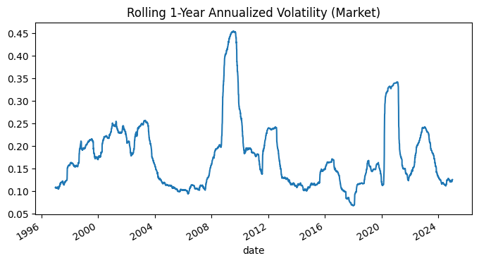
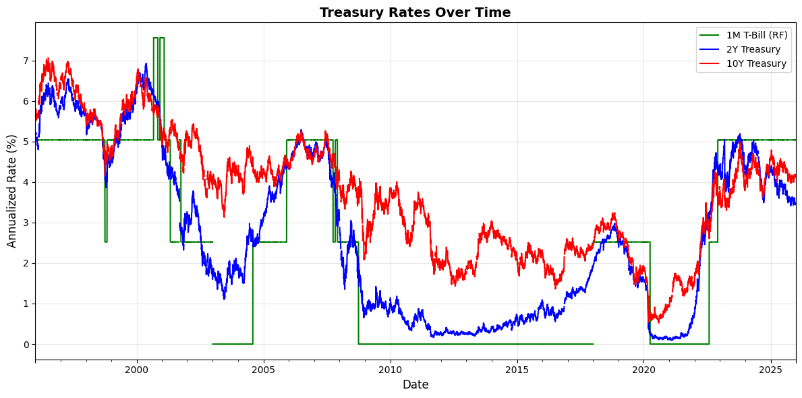
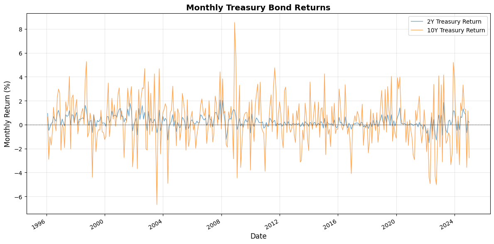
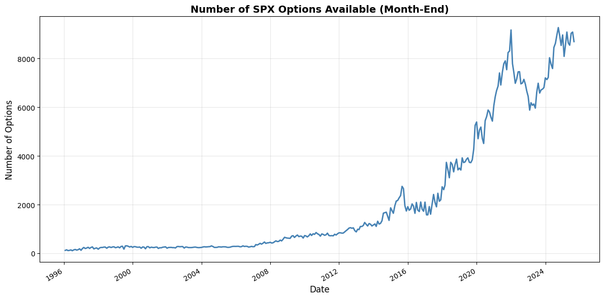
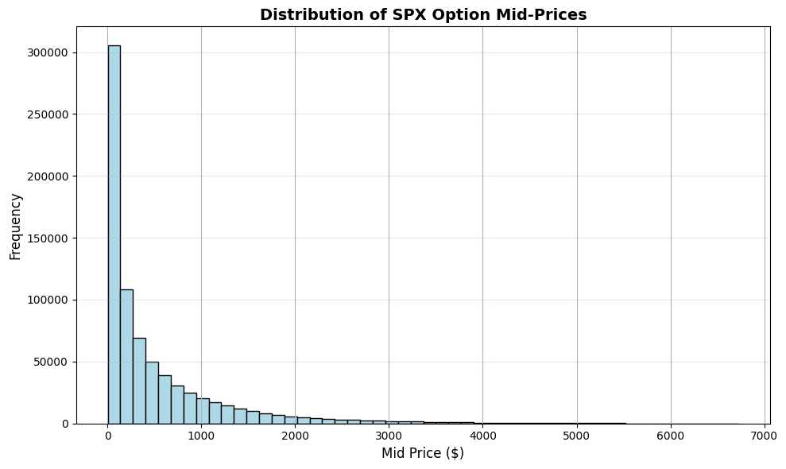

from pathlib import Path
import pandas as pd
import numpy as np
import matplotlib.pyplot as plt
import plotly.graph_objects as go
OUTPUT_DIR = Path("_output")
OUTPUT_DIR.mkdir(exist_ok=True)
from pathlib import Path
import pandas as pd
ROOT_DIR = Path().resolve().parents[0]
DATA_DIR = ROOT_DIR / "_data"
df = pd.read_parquet(DATA_DIR / "optionmetrics_spx_monthly.parquet")
df["mid_price"].hist(bins=50)
<Axes: >

# 1. Daily S&P 500 index returns (CRSP)
sp500_daily = pd.read_parquet(DATA_DIR / "crsp_sp500_daily.parquet")
# 2. Treasury returns
treasury_returns = pd.read_parquet(DATA_DIR / "crsp_treasury_returns.parquet")
# 3. Treasury yields from FRED
fred_rates = pd.read_parquet(DATA_DIR / "fred_treasury_rates.parquet")
# 4. SPX options (month-end)
options = pd.read_parquet(DATA_DIR / "optionmetrics_spx_monthly.parquet")
for name, df in {
"SP500 daily": sp500_daily,
"Treasury returns": treasury_returns,
"FRED rates": fred_rates,
"Options (SPX, month-end)": options,
}.items():
print(f"{name:25s} | shape = {df.shape}")
SP500 daily | shape = (7300, 4)
Treasury returns | shape = (348, 3)
FRED rates | shape = (7828, 4)
Options (SPX, month-end) | shape = (760830, 15)
S&P 500#
import numpy as np
sp500_daily["date"] = pd.to_datetime(sp500_daily["date"])
sp500_daily = sp500_daily.set_index("date").sort_index()
mkt_log = np.log1p(sp500_daily["vwretd"])
def summary_stats(log_ret, periods_per_year):
ann_mean = log_ret.mean() * periods_per_year * 100
ann_std = log_ret.std() * np.sqrt(periods_per_year) * 100
sharpe = ann_mean / ann_std
ar1 = log_ret.autocorr(lag=1)
n = log_ret.dropna().shape[0]
return pd.Series({
"Mean (%)": ann_mean,
"Std. dev. (%)": ann_std,
"Sharpe ratio": sharpe,
"AR(1)": ar1,
"N": n
})
table1_raw = pd.DataFrame({
"Market": summary_stats(mkt_log, periods_per_year=252),
})
table1_raw
| Market | |
|---|---|
| Mean (%) | 9.155026 |
| Std. dev. (%) | 18.982398 |
| Sharpe ratio | 0.482290 |
| AR(1) | -0.059368 |
| N | 7300.000000 |
cum_mkt = np.exp(mkt_log.cumsum())
cum_mkt.plot(
title="Cumulative Market Returns (S&P 500)",
figsize=(8, 4)
)
<Axes: title={'center': 'Cumulative Market Returns (S&P 500)'}, xlabel='date'>

# S&P 500 Cumulative Returns (Plotly)
cum_mkt = np.exp(mkt_log.cumsum())
fig = go.Figure()
fig.add_trace(go.Scatter(
x=cum_mkt.index,
y=cum_mkt.values,
mode='lines',
name='S&P 500',
line=dict(color='blue', width=2),
hovertemplate='Date: %{x}<br>Value: $%{y:.2f}<extra></extra>'
))
fig.update_layout(
title={
'text': "Cumulative Market Returns (S&P 500)",
'font': {'size': 16, 'weight': 'bold'}
},
xaxis_title="Date",
yaxis_title="Wealth Index ($1 initial investment)",
height=500,
width=900,
hovermode='x unified',
template='plotly_white'
)
fig.write_html(OUTPUT_DIR / "chart1_sp500_cumulative.html")
fig.show()
Rolling volatility
rolling_vol_mkt = (
mkt_log
.rolling(252)
.std()
* np.sqrt(252)
)
rolling_vol_mkt.plot(
title="Rolling 1-Year Annualized Volatility (Market)",
figsize=(8, 4)
)
<Axes: title={'center': 'Rolling 1-Year Annualized Volatility (Market)'}, xlabel='date'>

fig = go.Figure()
fig.add_trace(go.Scatter(
x=rolling_vol_mkt.index,
y=rolling_vol_mkt.values,
mode='lines',
name='Rolling Volatility',
line=dict(color='red', width=2),
hovertemplate='Date: %{x}<br>Volatility: %{y:.2f}%<extra></extra>'
))
fig.update_layout(
title="Rolling 1-Year Annualized Volatility (Market)",
xaxis_title="Date",
yaxis_title="Volatility (%)",
height=500,
hovermode='x unified',
template='plotly_white'
)
fig.write_html(OUTPUT_DIR / "chart1_sp500_volatility.html")
fig.show()
sp500_daily["vwretd"].describe()
count 7300.000000
mean 0.000435
std 0.011932
min -0.118167
25% -0.004575
50% 0.000780
75% 0.006113
max 0.114918
Name: vwretd, dtype: float64
Treasury Rates from FRED#
print(fred_rates.head())
print("\nColumns:", fred_rates.columns.tolist())
print("Index name:", fred_rates.index.name)
rf_1m treasury_2y treasury_10y
date
1996-01-01 NaN NaN NaN
1996-01-02 0.0002 0.0518 0.0560
1996-01-03 0.0002 0.0517 0.0558
1996-01-04 0.0002 0.0517 0.0565
1996-01-05 0.0002 0.0520 0.0569
Columns: ['rf_1m', 'treasury_2y', 'treasury_10y']
Index name: date
fred_rates_year = fred_rates.copy()
fred_rates_year['rf_1m'] = fred_rates['rf_1m'] * 252
fred_rates_year.index = pd.to_datetime(fred_rates_year.index)
fred_rates_year = fred_rates_year.sort_index()
fig, ax = plt.subplots(figsize=(12, 6))
# Plot all three rates
(fred_rates_year["rf_1m"] * 100).plot(ax=ax, label="1M T-Bill (RF)", linewidth=1.5, color='green')
(fred_rates_year["treasury_2y"] * 100).plot(ax=ax, label="2Y Treasury", linewidth=1.5, color='blue')
(fred_rates_year["treasury_10y"] * 100).plot(ax=ax, label="10Y Treasury", linewidth=1.5, color='red')
ax.set_title("Treasury Rates Over Time", fontsize=14, fontweight='bold')
ax.set_ylabel("Annualized Rate (%)", fontsize=12)
ax.set_xlabel("Date", fontsize=12)
ax.legend(loc='best')
ax.grid(True, alpha=0.3)
plt.tight_layout()
plt.savefig(OUTPUT_DIR / "chart2_treasury_rates.png", dpi=150)
plt.show()

fig = go.Figure()
fig.add_trace(go.Scatter(
x=fred_rates_year.index,
y=fred_rates_year["rf_1m"] * 100,
mode='lines',
name="1M T-Bill (RF)",
line=dict(color='green', width=1.5)
))
fig.add_trace(go.Scatter(
x=fred_rates_year.index,
y=fred_rates_year["treasury_2y"] * 100,
mode='lines',
name="2Y Treasury",
line=dict(color='blue', width=1.5)
))
fig.add_trace(go.Scatter(
x=fred_rates_year.index,
y=fred_rates_year["treasury_10y"] * 100,
mode='lines',
name="10Y Treasury",
line=dict(color='red', width=1.5)
))
fig.update_layout(
title="Treasury Rates Over Time",
xaxis_title="Date",
yaxis_title="Annualized Rate (%)",
height=500,
hovermode='x unified',
template='plotly_white'
)
fig.write_html(OUTPUT_DIR / "chart2_treasury_rates.html")
fig.show()
Treasury Returns from CRSP#
treasury_returns.index = pd.to_datetime(treasury_returns.index)
treasury_returns = treasury_returns.sort_index()
fig, ax = plt.subplots(figsize=(12, 6))
# Plot monthly returns
(treasury_returns["treasury_2y_ret"] * 100).plot(
ax=ax, label="2Y Treasury Return", linewidth=1, alpha=0.7
)
(treasury_returns["treasury_10y_ret"] * 100).plot(
ax=ax, label="10Y Treasury Return", linewidth=1, alpha=0.7
)
ax.set_title("Monthly Treasury Bond Returns", fontsize=14, fontweight='bold')
ax.set_ylabel("Monthly Return (%)", fontsize=12)
ax.set_xlabel("Date", fontsize=12)
ax.legend(loc='best')
ax.grid(True, alpha=0.3)
ax.axhline(y=0, color='black', linestyle='--', linewidth=0.5)
plt.tight_layout()
plt.savefig(OUTPUT_DIR / "chart3_treasury_returns.png", dpi=150)
plt.show()

fig = go.Figure()
fig.add_trace(go.Scatter(
x=treasury_returns.index,
y=treasury_returns["treasury_2y_ret"] * 100,
mode='lines',
name="2Y Treasury Return",
line=dict(color='blue', width=1),
opacity=0.7
))
fig.add_trace(go.Scatter(
x=treasury_returns.index,
y=treasury_returns["treasury_10y_ret"] * 100,
mode='lines',
name="10Y Treasury Return",
line=dict(color='orange', width=1),
opacity=0.7
))
fig.add_hline(
y=0,
line_dash="dash",
line_color="black",
line_width=1,
opacity=0.5
)
fig.update_layout(
title="Monthly Treasury Bond Returns",
xaxis_title="Date",
yaxis_title="Monthly Return (%)",
height=500,
hovermode='x unified',
template='plotly_white'
)
fig.write_html(OUTPUT_DIR / "chart3_treasury_returns.html")
fig.show()
Options Data#
# Number of Options Per Month
if "date" not in options.columns:
options = options.reset_index()
options["date"] = pd.to_datetime(options["date"])
# Count options per month
monthly_counts = options.groupby("date").size()
fig, ax = plt.subplots(figsize=(12, 6))
monthly_counts.plot(ax=ax, linewidth=2, color='steelblue')
ax.set_title("Number of SPX Options Available (Month-End)",
fontsize=14, fontweight='bold')
ax.set_ylabel("Number of Options", fontsize=12)
ax.set_xlabel("Date", fontsize=12)
ax.grid(True, alpha=0.3)
plt.tight_layout()
plt.savefig(OUTPUT_DIR / "chart4_options_count.png", dpi=150)
plt.show()

fig = go.Figure()
fig.add_trace(go.Scatter(
x=monthly_counts.index,
y=monthly_counts.values,
mode='lines',
name='Number of Options',
line=dict(color='steelblue', width=2),
fill='tozeroy',
fillcolor='rgba(70, 130, 180, 0.3)',
hovertemplate='Date: %{x}<br>Options: %{y:,}<extra></extra>'
))
fig.update_layout(
title="Number of SPX Options Available (Month-End)",
xaxis_title="Date",
yaxis_title="Number of Options",
height=500,
hovermode='x unified',
template='plotly_white'
)
fig.write_html(OUTPUT_DIR / "chart4_options_count.html")
fig.show()
# Option Price Distribution
fig, ax = plt.subplots(figsize=(10, 6))
options["mid_price"].hist(bins=50, ax=ax, edgecolor='black', color='lightblue')
ax.set_title("Distribution of SPX Option Mid-Prices",
fontsize=14, fontweight='bold')
ax.set_xlabel("Mid Price ($)", fontsize=12)
ax.set_ylabel("Frequency", fontsize=12)
ax.grid(True, alpha=0.3, axis='y')
plt.tight_layout()
plt.savefig(OUTPUT_DIR / "chart4_options_prices.png", dpi=150)
plt.show()

fig = go.Figure()
fig.add_trace(go.Histogram(
x=options["mid_price"],
nbinsx=50,
marker_color='lightblue',
marker_line_color='black',
marker_line_width=1,
hovertemplate='Price Range: %{x}<br>Count: %{y}<extra></extra>'
))
fig.update_layout(
title="Distribution of SPX Option Mid-Prices",
xaxis_title="Mid Price ($)",
yaxis_title="Frequency",
height=500,
template='plotly_white',
bargap=0.05
)
fig.write_html(OUTPUT_DIR / "chart4_options_prices.html")
fig.show()
# Summary statistics
print("Options Data Summary:")
print(f"Total options: {len(options):,}")
print(f"Date range: {options['date'].min()} to {options['date'].max()}")
print(f"Unique months: {options['date'].nunique()}")
print(f"\nPrice statistics:")
print(options["mid_price"].describe())
Options Data Summary:
Total options: 760,830
Date range: 1996-01-31 00:00:00 to 2025-08-29 00:00:00
Unique months: 356
Price statistics:
count 760830.000000
mean 517.676181
std 736.202251
min 3.000000
25% 56.650000
50% 222.850000
75% 673.187500
max 6726.800000
Name: mid_price, dtype: float64